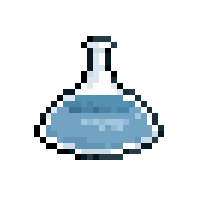

Kemispil
Hjem
Om
Testen
Syrer og baser
Hvad er definitionen på en syre?
Et stof der kan afgive et hydron
En væske med en pH-værdi under 7
En væske med en pH-værdi over 7
En væske der lugter skarpt
Hvad er definitionen på en base?
Et stof der kan afgive et hydron
En væske med en pH-værdi under 7
En væske med en pH-værdi over 7
En væske der lugter skarpt
Hvad er en flerhydron syre?
Et stof der kan afgive et hydron
En væske med en pH-værdi under 7
En syre opløst i vand
En syre med mere end en H
+
-ioner
Hvad er reaktionsskemaet for vands auto-hydronoverførsel
Copyright © Amanda Graven et al. 2017.
Siden er under
Creative Commons Attribution-NonCommercial-ShareAlike 4.0 International License
, med undtagelse af alle billeder, som tilhører Iben Visholm.
 Siden er under
Creative Commons Attribution-NonCommercial-ShareAlike 4.0 International License
, med undtagelse af alle billeder, som tilhører Iben Visholm.
Siden er under
Creative Commons Attribution-NonCommercial-ShareAlike 4.0 International License
, med undtagelse af alle billeder, som tilhører Iben Visholm.